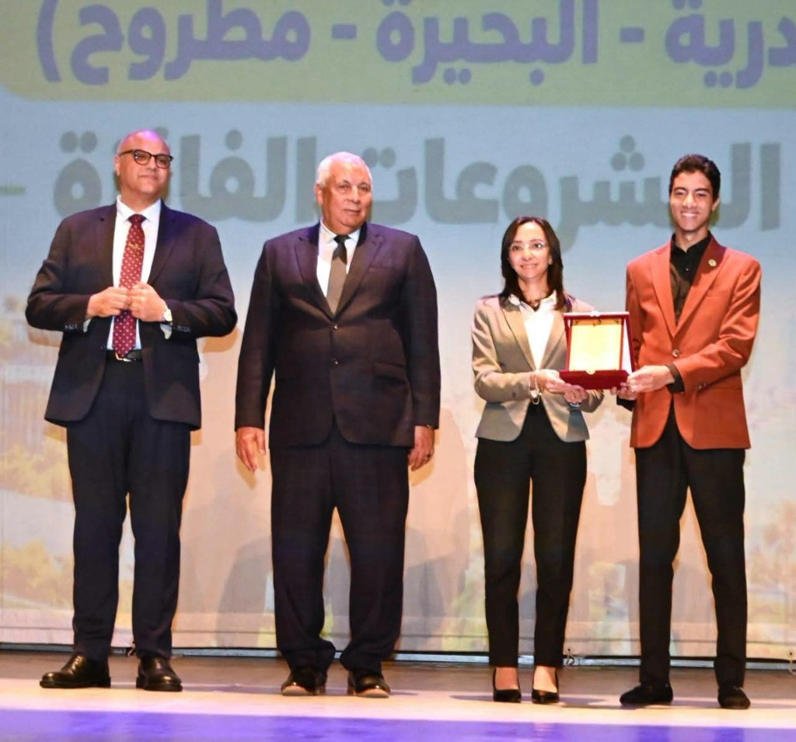
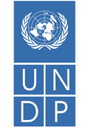
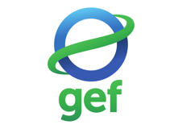
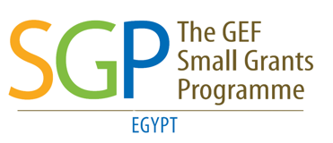
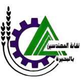
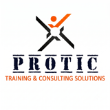
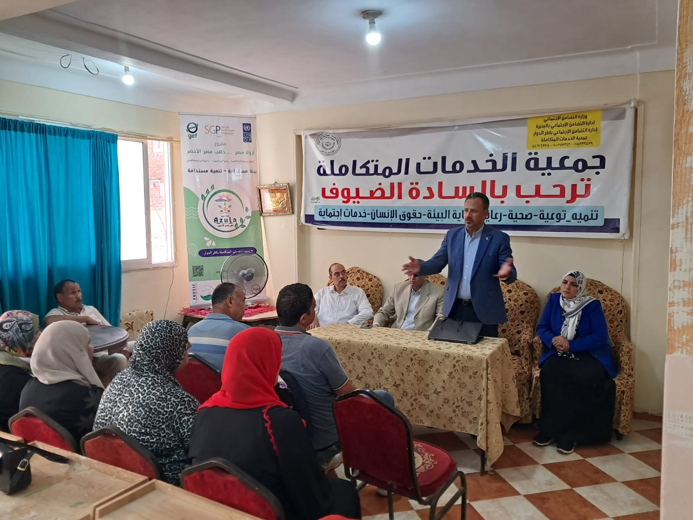

المشروع الأخضر المؤسسي
سجّل جمعيتك مع NGOHUB وابدأ مسار التأهيل للمنح والتمويل الدولي
بوابتكم لنقل العمل الأهلي من المعاملات الورقية إلى الجاهزية الرقمية المكتملة، وصياغة مقترحات المشروعات وفق أدق معايير المانحين الدوليين لتأمين التمويل التنموي المستدام.






لماذا تخسر معظم الجمعيات الأهلية فرص المنح والتمويل الدولي؟
تشخيص الواقع الميداني الذي يواجه مجالس إدارات الجمعيات والحل العملي لتأمين المنح
الرفض التمويلي وصعوبة الوصول للمانحين
تُستبعد أكثر من 90% من مقترحات المشروعات المقدمة للجهات المانحة نتيجة أسباب يمكن تلافيها:
-
الصياغة العشوائية وغير المتوافقة: كتابة مقترحات لا تتبع المنهجيات المعيارية (Logical Frameworks) التي تطلبها الصناديق الدولية.
-
غياب دراسات الجدوى وقياس الأثر: الافتقار للأرقام الدقيقة وحساب العائد التنموي وصون الموارد الطبيعية والمائية.
-
نقص الجاهزية والامتثال الرقمي: عدم وجود بوابات رسمية وسجلات معتمدة تثبت قدرة الجمعية على إدارة المنحة بنزاهة وشفافية.
نحن نؤهل جمعيتكم ونكتب مقترح مشروعكم حتى الاعتماد
نُسلّح جمعيتكم بالخدمتين الأساسيتين اللتين تضمنان استيفاء شروط المانحين واقتناص التمويل:
-
1. تجهيز وتأهيل الجمعية للمنح: تدقيق شامل للملف المؤسسي للجمعية، مواءمة الهوية مع معايير المانح الدولي، وسد أي فجوة تنظيمية.
-
2. كتابة وصياغة مقترح المشروع التنموي: صياغة احترافية متكاملة لمقترح المنحة، ومصفوفة النتائج (LogFrame)، والميزانية، ومتابعة التقديم الرسمي.
هل ملف جمعيتكم مؤهل للقبول أم مهدد بالاستبعاد المالي والفني؟
حرّك مفاتيح الفحص وفق وضع جمعيتكم الحالي لتشخيص نقاط القوة والثغرات وفرص القبول فوراً
الركائز الـ 3 الأكثر حسماً لدى لجان المانحين:
قم بتفعيل المعايير المتوفرة حالياً لدى جمعيتكم لمشاهدة التقييم المباشر:
تشخيص الفحص الأولي: ملف الجمعية الحالي يفتقر لمقومات الامتثال المكتبي، مما يجعله عرضة للاستبعاد السريع أمام لجان التقييم الدولية. نحن نؤهل جمعيتكم ونسد هذه الثغرات لتأمين فرصة الفوز بالمنحة.
كيف نجعل مقترح جمعيتكم غير قابل للرفض أمام الجهات المانحة؟
نُرفق بمقترح مشروعكم 4 مقومات قوة تنموية تثبت للمانحين الجدارة والأسبقية في نيل التمويل
1. دراسة جدوى تنموية صلبة
إعداد دراسات جدوى فنية ومالية وتشغيلية تبرهن للجهة المانحة كفاءة إدارة ميزانية المشروع وتحقيق أعلى عائد تنموي.
سلامة مالية وتشغيلية2. قياس الأثر البيئي وصون الموارد
دمج مؤشرات دقيقة لصون المياه وخفض البصمة البيئية (تتويجاً لخبرة NGOHUB الفائزة بالمركز الأول بالمشروعات الخضراء الذكية NISGP).
أولوية الصناديق المناخية3. بوابة رقمية وموقع رسمي معتمد
استيفاء شرط المانحين الأساسي في التحقق من وجود وهوية الجمعية وسابقة أعمالها وقنوات التواصل الرسمية المشفرة.
تحقق وهوية مؤسسية4. منظومة رقمية لإدارة الكوادر
توثيق الكفاءات والفرق الميدانية وساعات التطوع رقمياً لإثبات امتلاك الجمعية كادراً بشرياً قادراً على تنفيذ أنشطة المنحة على الأرض.
جاهزية تنفيذية ميدانيةما هو برهان نجاحنا وتأثيرنا الميداني؟
أرقام وإنجازات حقيقية موثقة تثبت قدرة NGOHUB على نقل الجمعيات للجاهزية والنجاح

تتويج رسمي على مستوى الجمهورية تقديراً لحلول التحول الأخضر والتمكين البيئي والمؤسسي للجمعيات.
ساهمنا في نقلها إلى الجاهزية الرقمية وبناء ملفاتها الاعتمادية أمام لجان التقييم والمانحين.
قاعدة بيانات محدثة للمنح المناخية والمجتمعية التي تتوافق مع قدرات واحتياجات الجمعيات الشريكة.
المشروع الأخضر المؤسسي لتمكين وتأهيل الجمعيات الأهلية، الحائز على المركز الأول بالمشروعات الخضراء الذكية (NISGP).
نؤهل جمعيتكم لاستيفاء معايير المانحين الدوليين، نصيغ مقترحات المشروعات التنموية باحترافية، ونربطكم بفرص التمويل والمنح الدولية الموثقة.
سجّل بيانات جمعيتك للبدء في مسار التقييم وصياغة المقترح والانضمام لتحالف المشروعات الخضراء.
جاهز لنقل جمعيتك إلى رادار المانحين وتأمين التمويل القادم؟
خطوة واحدة تفصل مجلس إدارتكم عن البدء في صياغة مقترح مشروعكم واستيفاء متطلبات التمويل الدولي بشراكة مؤسسية موثقة.
تسجيل الدخول للوحة تحكم NGOHUB CMS
أدخل اسم المستخدم وكلمة المرور الإدارية للوصول وإدارة المنظومة